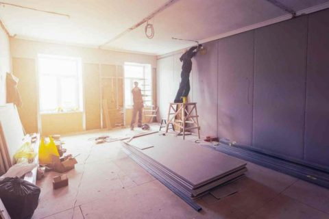

軽天・ボードから、仕上げ・修繕まで。川越市から一都三県の現場に対応します。
店舗・商業施設・ビル・公共施設・マンションの内装工事に対応します。
{{ d.desc }}

軽量鉄骨で組む下地の通り・不陸が、その後のボード・クロス・塗装すべての仕上がりを左右します。登録内装仕上工事基幹技能者・鋼製下地一級技能士が、下地の段階から丁寧に追い込みます。「工期がタイトな現場」「他業者との取り合いが多い現場」こそ、お任せください。
内装に付随する仕上げ工事・修繕工事にも対応しています。
{{ o.desc }}